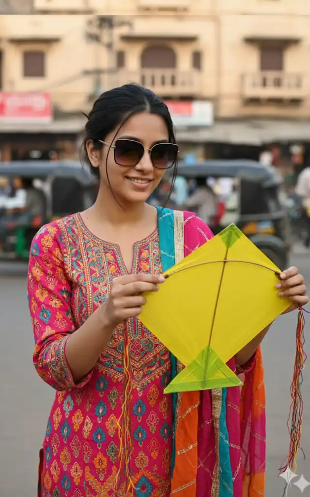
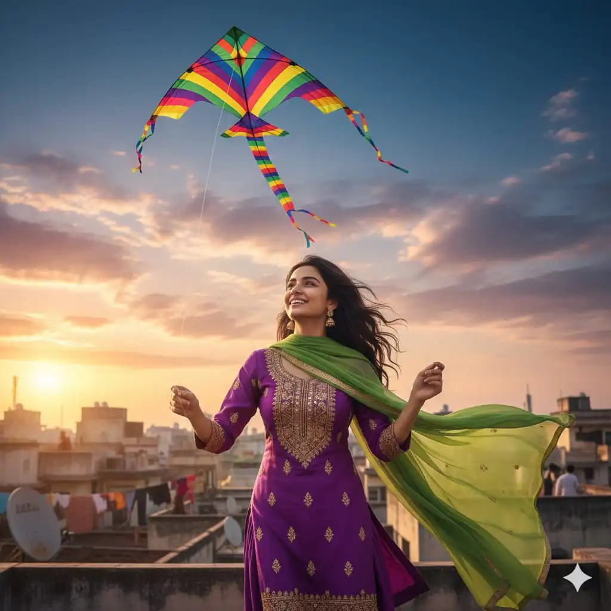
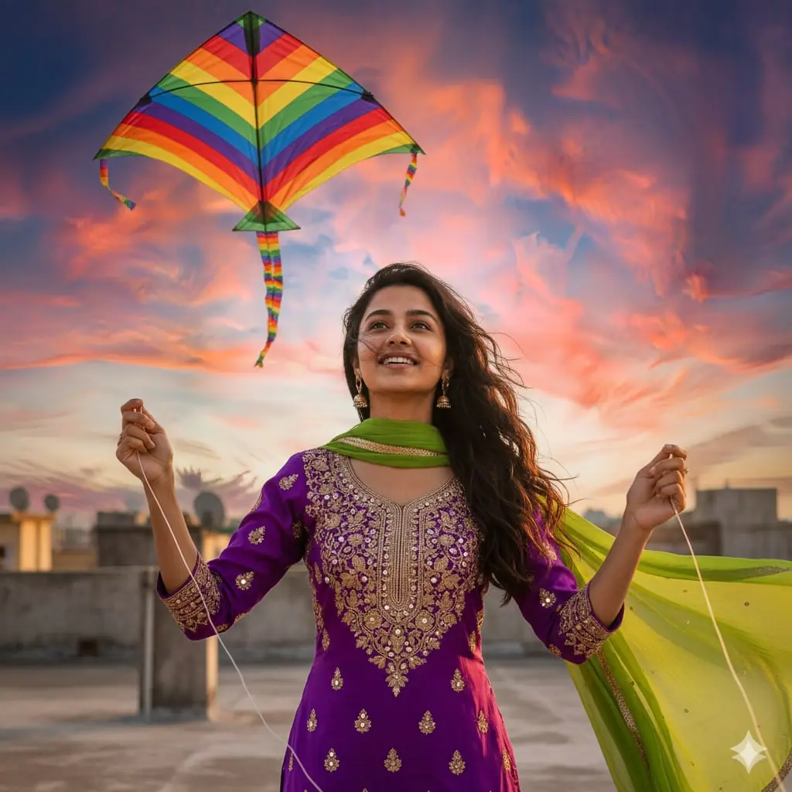
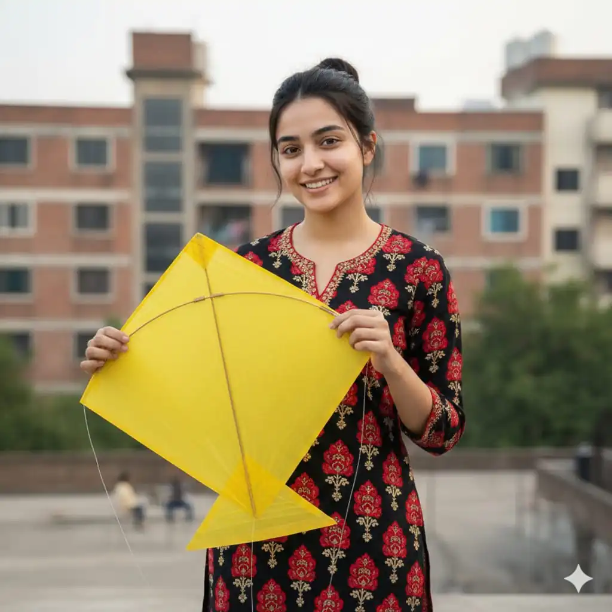
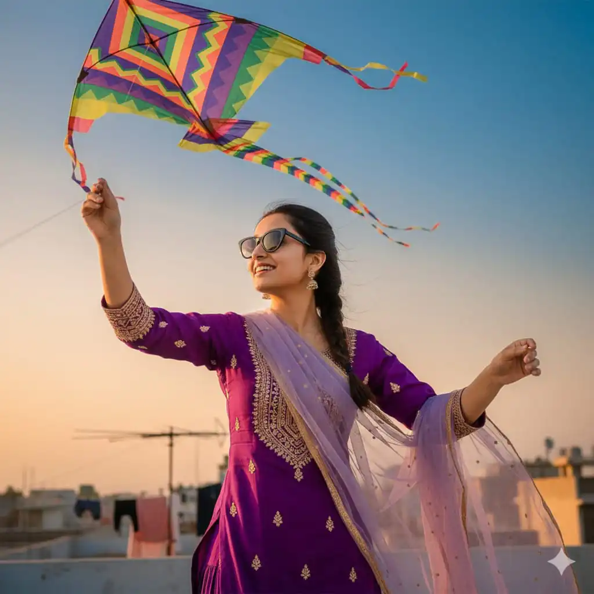

Hello friends, I’m Salman Khan, owner and author of promptseen.com, and welcome to another trending AI prompt guide. As we step into Makar Sankranti 2026, AI photo editing is becoming a powerful way to celebrate Indian festivals digitally. This article is specially written for creators, editors, and social media users who want Makar Sankranti AI photo editing prompts for Gemini and other AI platforms.
Want more awesome prompts?
Join our community and get the latest viral prompts daily.
In this post, I’ll share ready-to-use Gemini Uttarayan prompts, explain their usage, and help you create viral festive images for Instagram, WhatsApp status, and reels.
? AI PROMPT
Ultra-realistic 8K cinematic image of a beautiful young Indian woman flying a kite from a rooftop in India.
Use the uploaded reference image for the face - exact same face, facial structure, skin tone, expression, and identity. Do not change the face. She is wearing black sunglasses, a modern black top, soft loose gray jeans, and chunky gray-and-white sneakers, styled in a Bollywood- inspired modern festive look.
Golden-hour sky filled with rich gold and orange hues. Dozens of colorful kites soaring high in the sky. Distant rooftops with people flying kites, creating a festive and lively Indian atmosphere.
Cinematic depth of field, soft film grain, warm haze, dramatic lighting, ultra-realistic textures, high dynamic range, Bollywood-style grandeur, professional cinematic photography, 8K quality.
What is Makar Sankranti & Uttarayan 2026?
Makar Sankranti is one of the most important Hindu festivals, marking the sun’s transition into the zodiac sign Makara (Capricorn). In 2026, Makar Sankranti is celebrated with great enthusiasm across India.
In Gujarat and some parts of India, Makar Sankranti is famously known as Uttarayan, a festival of colorful kites, blue skies, traditional attire, and festive food like tilgul and chikki.
? AI PROMPT
Using the uploaded [REFERENCE IMAGE] of the same woman as the main subject, create a realistic scene of a young woman posing on a rooftop under an open blue sky during a colorful kite festival. She is wearing a loose coffee-colored shirt and white pants, paired with stylish sunglasses, casually holding her shirt with one hand. Her face, skin tone, facial features, and overall identity must exactly match the reference image, with a clean, natural, glowing look. Bright multicolored kites of different shapes and patterns fill the blue sky around her, creating a lively festive atmosphere, while a traditional kite thread spool lies beside her on the rooftop. The scene feels vibrant, cheerful, and celebratory, captured in soft natural daylight with cinematic realism, sharp focus, high detail, balanced composition, ultra-realistic photography, no face distortion, and 4K quality.
Makar Sankranti 2026 Ekadashi is also searched widely, as many devotees observe rituals, fasting, and holy baths on this auspicious day.
With AI tools like Gemini, you can now transform normal photos into cinematic, devotional, or festive AI images in seconds.

? AI PROMPT
Using the uploaded reference image of the woman as the base, generate an ultra-realistic portrait. A beautiful young woman wearing stylish sunglasses and a bright, colorful Indian kurti. She has a cute, cheerful smile and is standing outdoors while holding a vibrant yellow diamond- shaped kite in both hands, gently inspecting it. Soft natural daylight highlights her face, skin texture, and outfit details. The background shows a slightly blurred urban Indian setting with buildings, creating a warm, festive, and lively atmosphere. Maintain the same camera angle, framing, pose, facial features, and mood as the reference image. High- end photography look, crisp sharp details, realistic lighting, shallow depth of field, 4K quality.
? AI PROMPT
Using the uploaded reference image of the person as the exact face and identity, create a vibrant and colorful scene of the same person flying a bright, traditional Indian kite (patang) in the open sky during sunset. The person is standing on a rooftop terrace with a joyful expression, holding the kite string tightly. The sky is painted in warm hues of orange, pink, and purple, with multiple colorful kites soaring in the background. Subtle motion blur on the kite string to show realistic movement. The person is wearing a navy blue fitted polo t-shirt, black high-waist trousers, and black sunglasses. Ultra-realistic photography style, cinematic lighting, natural skin texture, accurate facial features matching the reference image, sharp focus on the subject, festive Indian atmosphere, high detail, 4K quality.

? AI PROMPT
A close, clear, cinematic shot of a young girl flying a colorful kite under a blue sky, a festival-style portrait. Rooftop background, hair blowing in the wind, warm sunset glow, a cultural yet modern sports-day vibe, ultra-realistic 4K image. The same face wearing a bright royal purple salwar kameez with a parrot green dupatta. "Ensure the face resembles the person in the provided image

? AI PROMPT
A beautiful young woman wearing stylish a bright, pink Indian kurti. She has a cute, cheerful smile, standing outdoors while holding a vibrant yellow diamond-shaped kite in both hands, as if inspecting it. Soft natural daylight highlights her face and outfit.
The background features a slightly blurred urban setting with buildings, creating a warm, lively atmosphere. Ultra-realistic, crisp details, same framing and mood as the original male prompt."Ensure the face looks like the person in the provided image

? AI PROMPT
highlights her face and outfit.
A beautiful young woman wearing stylish a bright, black, red flower Indian kurti. She has a cute, cheerful smile, standing outdoors while holding a vibrant yellow diamond-shaped kite in both hands, as if inspecting it. Soft natural daylight
The background features a slightly blurred urban setting with buildings, creating a warm, lively atmosphere. Ultra-realistic, crisp details, same framing and mood as the original male prompt."Ensure the face looks like the person in the provided image

? AI PROMPT
Cinematic festival-style portrait of a young woman flying a colorful kite under blue sky. Rooftop background, wind-blown hair, warm sunset glow, cultural yet modern sports-day vibe, ultra-realistic 4 K image. Same face wearing wearing a vibrant royal purple salwar kameez or kurti accented with a sheer lavender dupatta, black sunglasses4"Ensure the face looks like the person in the provided image
How to Use Makar Sankranti Gemini Prompt?
Follow these simple steps:
Open Gemini AI
Upload your photo (optional but recommended)
Copy any Makar Sankranti AI photo editing prompt
Paste it into Gemini
Generate and download your image
👉 Tip: Use portrait photos, clear faces, and good lighting for best results.
Makar Sankranti is not just a festival, it’s an emotion. With Gemini Uttarayan prompts, you can now celebrate this festival digitally in a creative and modern way. Whether you want devotional vibes, cinematic kite shots, or viral Instagram photos, these Makar Sankranti AI photo editing prompts will help you stand out in 2026.